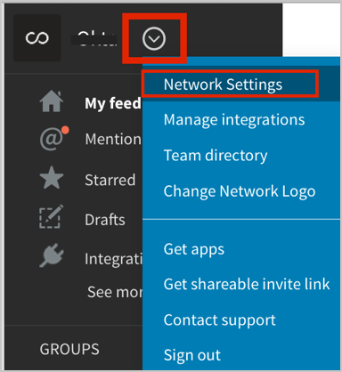
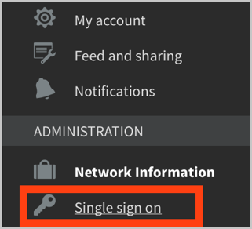

Log in to your Convo Admin account.
Click the Settings icon in the top left corner, then select Network Settings from the drop down menu:

In Network Settings, select Single sign on.

In the Single sign on tab, do the following (see screen shot at end of step for reference):
Make sure Enable SSO is checked.
Copy and save the following as metadata.xml, then copy it into the space provided.
Sign in to Okta Admin app to have this variable generated for you.
Copy SAML Consumer URL/Postback URL and SAML Audience.
For SAML identity location, select Identity is in the NameIdentifier element.
Click Save Changes.

In Okta, select the General for the Convo app, then click Edit.
Add the values for SAML Consumer URL/Postback URL and SAML Audience that you copied earlier.
Click Save.
Done!
Notes:
SP-initiated flows and IdP-initiated flows are supported.
Just In Time (JIT) provisioning is not supported.